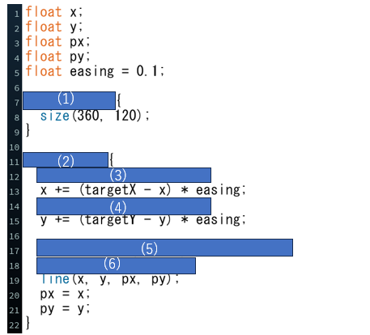

問題のコード
プログラム実行画面
問題文
上図はマウスを追跡して,マウスのスピードによって太さが変わる線を描くプログラムです.
(1)プログラムが動き始めたときに１回だけ実行されるように,プログラムを埋めてください.
(2)プログラムが止まるまで繰り返し実行されるように,プログラムを埋めてください.
(3)targetXを浮動小数点数として宣言し,値（mouseのX座標）を割り当ててください.
(4)targetYを浮動小数点として宣言し,値（mouseのy座標）を割り当ててください.
(5)weightを浮動小数点として宣言し,値（2点間の距離）を割り当ててください.
ここで２点間の距離は点(x, y)と点(px, py)との距離です.
(6)線の太さを変数weightとしてください.
(5)点(a, b)と点(c, d)の2点間の距離はdist(a, b, c, d);で求められる.
(6)線の太さを変える関数の値をweightとする.
解答欄
解説欄